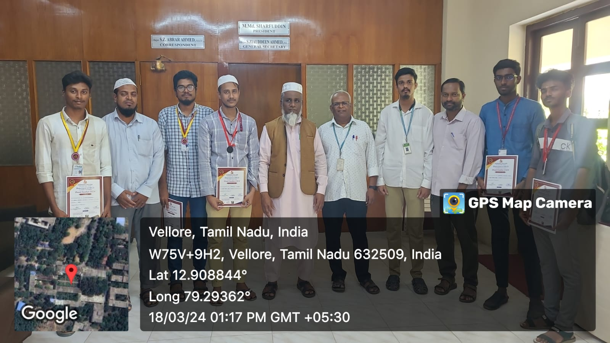

First Year Symposium Achievements
Click the image for more details
I participated in a symposium at Global College of Arts and Science - Women, Veppur (near Arcot), Ranipet-632509 on 26-02-2024. I am thrilled to announce that I won the 1st prize in debugging in Python at the state level.

Click the image for more details
Before this, I started my symposium journey at Voorhees College on 16-02-2024. I am proud to share that I secured the Third prize in debugging and built a program.